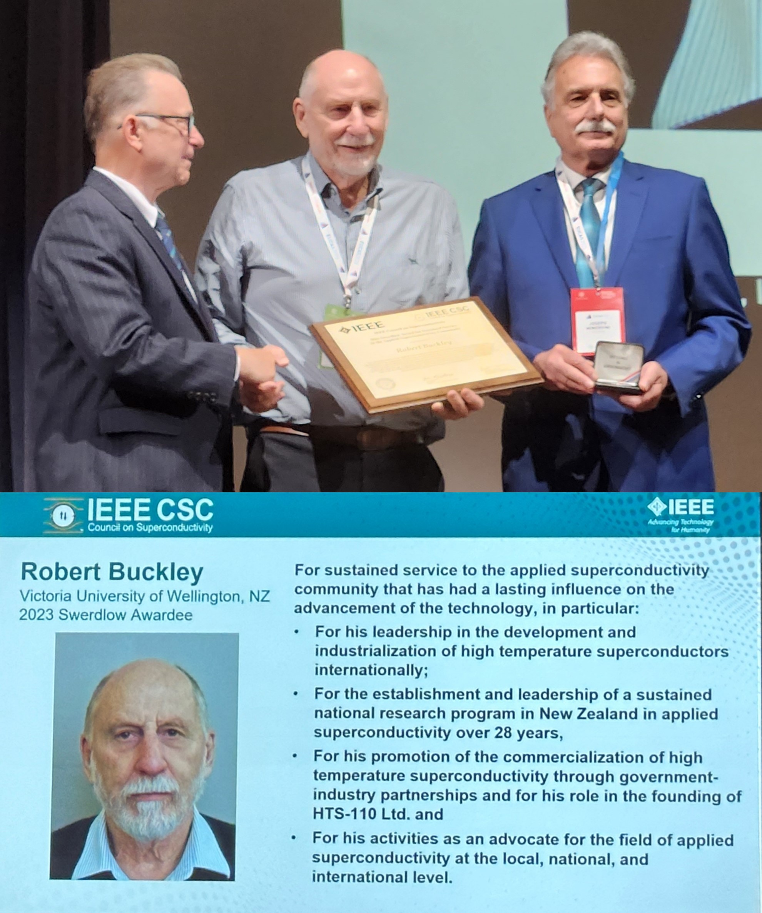

Congratulations to Institute Scientist Dr. Justin Brooks who was awarded a Ngā Puanga Pūtaiao Fellowship to support his research on ultra-fast optically switched high-Tc superconducting power electronics. This technology is critical to the electrification of aircraft, fusion reactors, and quantum computers. Read more.
The Paihau – Robinson Research Institute are taking their first foray into space. They are looking to test a brand-new superconducting magnet and flux pump design to see if it can make plasma rockets more efficient.
Promotion to Professor
7 November, Robinson Research Institute
Congratulations to Institute Principal Scientist Dr Zhenan Jiang who has been promoted to Professor. Dr Jiang has established a world class research record in the electromagnetic properties of superconductors. His programme has had an impact in understanding fundamental AC properties of wires and cables, through to how AC fields impact applications such as magnets for fusion and high-speed electric aircraft engines. Zhenan’s work supports multiple research projects in applied superconductivity at the Robinson Research Institute. Zhenan has strong international collaborations, particularly in Japan, China and Korea, which have led to collaboration and student exchange agreements with the University. He is a strong educator and his PhD students have gone on to establish successful research careers. Zhenan’s external reviewers lauded his record of research leadership, fundraising and research output. Zhenan has demonstrated sustained hautūtanga / leadership including a record of service to the University as a postgraduate coordinator, a member of the Engineering Faculty research committee and an Institute Executive committee member.
Congratulations to Institute Senior Scientist Dr Kai Chen who has been awarded funding for his proposed research "Capturing the fleeting—tracking photophysics in organic LED and laser materials with ultrafast photoluminescence spectroscopy" by the Marsden Fund.
Launching rockets into space, high performance motorsport engines, and leading the world into sustainable aviation – New Zealand punches far above its weight, says Paihau—Robinson Research Institute Te Herenga Waka—Victoria University of Wellington Professor Rod Badcock. He leads a team developing superconductive motors to enable all-electric aircraft and, ultimately, sustainable aviation.
During a seminar by Deputy Director Professor Rod Badcock, Ākonga (learners), kaimahi (staff) and industry partners of Te Pūkenga heard about the important role vocational education has to play in developing an engineering workforce to build and maintain electrified planes, trains, trucks and ships.
New Zealand’s biggest celebration of research commercialisation saw two Wellington UniVentures nominees take home top prizes, including Professor Rod Badcock who was named BNZ Researcher Entrepreneur and spin-out XFrame which won the MAS Commercialisation Impact Award.
Congratulations to Rod Badcock, winner of the 2023 BNZ Researcher Entrepreneur Award!
This award recognises an entrepreneurial researcher who has made outstanding contributions to business innovation or has created innovative businesses in New Zealand. This could be through technology licensing, start-up creation or by providing expertise to support business innovation.
As a champion of New Zealand's innovation system, Rod fosters an entrepreneurial environment at the Robinson Research Institute, urging students to design innovations that address problems in the real world beyond the lab. This has resulted in the spin-out of exciting new companies like OpenStar Technologies and the international success of domestic start-ups like HTS 110. Cleantech development company Fabrum, which recently closed a $23 million funding round, has a very strong collaborative relationship with Robinson Research Institute and has also benefited from Rod’s support and valuable assistance in accessing the international superconducting market.
As part of an international experts panel at the 2023 New Zealand Aerospace Summit, Institute Chief Engineer Dr Randy Pollock spoke from a leadership position on how space instrumentation is critical to mitigating environmental degradation on earth.
2023 Max Swerdlow Award
9 September, Robinson Research Institute

Congratulations to former Institute Director Professor Bob Buckley, who is the 2023 recipient of the Max Swerdlow Award for Sustained Service to the Applied Superconductivity Community. The award was presented by the IEEE Council on Superconductivity at the European Conference on Applied Superconductivity in Bologna, Italy.
The KiwiNet Awards are the biggest national event for the research commercialisation sector in Aotearoa New Zealand, bringing the community together to connect, showcase successes, and inspire others.
"The nomination is a testament to Professor Badcock's leadership and the Institute's commitment to pushing the boundaries of what's possible with superconductivity", says Rod’s colleague, Dr Nick Long, Director of the Paihau—Robinson Research Institute.
Institute Deputy Director Professor Rod Badcock is a 2023 Kiwinet Research Commercialisation Awards finalist for his work on "Building an emerging clean tech economy taking New Zealand's expertise to the world"
Congratulations to Ben Parkinson and the Robinson Research Institute MRI team who won the Innovation Gold category at the Wellington Gold Awards for their Head MRI system.
Visiting MP's
25 August, Robinson Research Institute
It was our pleasure to host a visit from Members of Parliament Judith Collins and Chris Bishop who learned about our superconductor and zero-carbon steel making research.
An innovative medical engineering project shows there is international demand for Wellington technical and designs skills.
Victoria University of Wellington’s Robinson Research Institute and its School of Design Innovation helped an international collaboration of universities manufacture and install the first-of-a-kind MRI head scanner.
Robinson Research Insititute alumnus Dr Ratu Mataira is on a mission to harness the power of the sun.
The 31 year old leads OpenStar Technologies, a Wellington based start-up building a 'levitated dipole' fusion reactor prototype.
Imagine being able to harness the energy of the galaxy's mightiest stars, and power our entire planet. It sounds like a sci-fi plot, but in a warehouse in Wellington's Ngauranga Gorge, physicist Ratu Mataira (an alumnus of the Institute), and his young team are trying to do just that.
Three South Korean researchers claim they have cracked room temperature superconductivity. Their claims have been shrouded by controversy and scientists are sceptical of the claims and are instead waiting on it to be replicated elsewhere. Professor Rod Badcock from the Victoria University of Wellington's Robinson Research Institute talks to Mark.
After completing his Bachelor of Engineering with Honours (BE(Hons)) degree, Dan Strawbridge began his career immersed in world-leading research at Paihau—Robinson Research Institute. His role within the Zero-CO2 team involves developing a crucial component for a hydrogen reactor, with the potential to eliminate carbon dioxide emissions from the global steel-making industry.
Superconducting Motor Runs for the First Time
27 July, Robinson Research Institute
On 25 July a major milestone was achieved when the Institute's superconducting AC homopolar motor demonstrator was successfully ramped up for the first time. During the test the motor reached a speed of 1000 revolutions per minute (rpm). Future tests will see the motor speed gradually increased to the design target of 20000 rpm. The demonstrator has been built to prove superconducting technologies necessary for powering large electric aircraft.
Robinson Research Institute's Head MRI scanner led by Dr Ben Parkinson (pictured on the right) has been announced as a finalist for the 25th Wellington Gold Awards.
Collaborative power: annual workshops forge global impact
13 July, Robinson Research Institute
When two of the leading institutes in their fields decide to collaborate, the results have a global impact. When it happens regularly, the results are even more far-reaching.
Kyoto University and Te Herenga Waka—Victoria University of Wellington have been holding annual workshops since 2014. These are organised by Victoria University of Wellington’s Paihau—Robinson Research Institute and Kyoto University's Faculty and Graduate School of Engineering.
Kyoto University is a globally high-ranked university with 10 Nobel prize winners and Paihau—Robinson Research Institute is a global leader and trailblazer in superconductivity, material science, and electromagnetics.
This year the workshop was held in Kyoto from 29-30 June. The host provided brilliant opportunities for a delegation from New Zealand to work together in the historical capital of Japan with dozens of fellow researchers and engineers.
Exploring recent breakthroughs in aircraft electrification, quantum computing, superconductivity, and more
The jam-packed two-day workshop covered recent discoveries and breakthroughs in areas like aircraft electrification, next-generation optoelectronics, quantum computing, superconductivity material science, and electromagnetics.
The workshop covered a wide range of topics in materials science and superconductivity. It included studies on exotic forms of superconductivity, the use of phase change materials for heat storage, and the growth of quantum nanowires in organised patterns. Participants also discussed the creation of intrinsic diodes in superconducting materials, which could be used for valves and switches in current control. Another area of focus was the manipulation of electron spin in materials for information storage and processing. Additionally, the workshop explored the generation of THz radiation from layered superconductor materials and the use of ultrafast spectroscopy to study energy conversion in organic photovoltaics. The factors influencing the performance of organic photovoltaics and the application of photonics for quantum information processing were also discussed. In the realm of superconductivity, topics included increasing current levels in power supplies, developing motor-specific superconductor cables, utilising superconductivity in electric aircraft, and exploring the operation of superconductor magnets in space environments.
For the organising institutes, this kind of collaboration is a way to ensure that their research is of the highest quality and has a robust and globally significant application.
Empowering research institutes for high-quality results and global impact
Workshop Chair and Director of Paihau—Robinson Professor Nick Long says, Our approach was, from the very beginning, a bottom-up way to engage with the colleagues from Kyoto on a very personal level.
Research does not happen in a vacuum but requires collaboration across different institutes, disciplines and researchers.
Paihau—Robinson’s Dr Zhenan Jiang is a testament to the success of this fruitful bottom-up approach. He completed his PhD with Professor Amemiya twenty years ago. The contacts he established during that time in Japan eventually led to the first workshop in 2014 and, subsequently, a formal Memorandum of Understanding between the universities in 2016.
Principal Scientist Dr Zhenan Jiang, Dr Long, Professor Rod Badcock, Senior Scientists Dr Simon Granville and Dr James Storey from Paihau—Robinson Research Institute, and Professor Ulrich Zuelicke from Victoria University of Wellington’s School of Chemical and Physical Sciences participated in the June workshop in Kyoto.
The workshop was like a superconductor of collaboration itself. Coming together in person makes ideas, news and views flow without resistance and friction. Sharing the recent findings, problems and visions speed up the research, improves the quality, and helps to maintain momentum. It is also a way to get research papers published in academic journals, build a case for funding and open opportunities for commercial partners to access the latest application of the science.
Professor Long explains, This all means that we can accelerate the pace and achieve more in research.
"Aircraft electrification, quantum computing, optical technologies, solar cell technologies, and fibre optic sensing technologies are the key to a sustainable future in many applications from transport to healthcare and from communication to space exploration.
Dr Zhenan Jiang elaborates, With our colleagues from Kyoto, we can make a huge difference. Those personal ties and connections bring more benefits to the global research community, and hopefully, this annual workshop has shown that one day the collaboration between these two universities can become even wider and deeper.
Professor Long says, Being a small but highly efficient and influential player in these emerging technologies makes us a sought-after partner and a highly desirable place for studies among the brightest young minds.
We are small enough to be very nimble, quick, and responsive, yet big enough to be a global partner. The workshops with Kyoto University are just one example of our forward-looking strategy to significantly contribute to sustainability and the quality of life through science and human connections.
Reducing orbital launch costs by 100-fold would be world changing, and that's what Electromagnetic Launch Inc. (EML) and Robinson Research Institute of Victoria University of Wellington in New Zealand aim to do in a new partnership agreement and demonstration experiment announced May 30, 2023.
Institute Director Professor Nicholas Long discusses how superconducting materials are being used to address some of the world’s most challenging problems.
World-First Portable MRI Scanner
12 June, TVNZ Breakfast
Institute Senior Engineer Dr Ben Parkinson discusses the new portable MRI scanner he helped develop on TVNZ's Breakfast show.
Researchers in New Zealand, the US and South America have been working together for the better part of a decade on a transportable MRI scanner in the hopes of making it more accessible and comfortable.
Researchers at the Robinson Research Institute developed and installed the magnet used in the portable scanner, which is now being trialled in a joint project with the University of Minnesota in the United States.
Ben Parkinson, a senior engineer at Robinson Research Institute, says the magnet's small size is the key to making MRI scanners portable. Smaller scanners will also mean "a more positive patient experience," he says.
Paihau—Robinson Research Institute's Senior Principal Engineer Betina Pavri spoke to the New Zealand Students' Space Association about the science and engineering of NASA's Mars Curiosity Rover.
Visit from the New Zealand Electrical Inspectors Association
It was our pleasure to host a visit from members of the New Zealand Electrical Inspectors Association, who toured our superconducting machines laboratory and learned about our research.
Congratulations Kent and Yueming!
18 May, Robinson Research Institute
Congratulations to Dr Kent Hamilton and Dr Yueming Sun who received their PhDs in Engineering at the May graduation ceremony.
Victoria University of Wellington will be conducting tests on the International Space Station next year that could be a game-changer for deep-space and satellite propulsion.The space drive is based around superconducting magnets and is being developed by the university's Paihau-Robinson Research Institute.
Paihau-Robinson Research Institute Professor Rod Badcock says that zero emission flights will have both an environmental impact, but also a major economic one.
A large amount of New Zealand's GDP is spent purchasing oil from overseas, so switching to zero emission flights will give the economy a boost.
Professor Rod Badcock from Paihau-Robinson Research Institute told Sunday Morning that New Zealand was a "sought after" partner to help solve the "massive global challenge" of achieving sustainable aviation.
Congratulations to Institute Deputy Director Professor Rod Badcock who won the Wellingtonian of the Year Award in the Science and Technology category after being nominated for his work with superconductivity towards designing electric aircraft.
"This is not just an award for me, but an award for my team, for the Institute, the University, and the region—because that’s what it’s built on."
New Zealand scientists are building a lighter, more reliable electric engine that they hope could put our country at the centre of the global aviation industry.
Aerospace New Zealand had the pleasure of visiting Victoria University at Wellington’s Paihau—Robinson Research Institute this past December.
This was a unique opportunity to have a peek at the latest ground-breaking discoveries in Space Propulsion.
Doctors Dominic Mosely & Zhenan Jiang and Professors Rod Badcock & Mengjie Zhang of Victoria University have contributed to a new roadmap which lays out how AI and big data techniques could drive advances in superconductivity research and development is aiming to help to spark a tech revolution.
An international team of leading engineers, physicists, and computation scientists are behind the roadmap, which is the first of its kind for the field of AI for superconductor research. Dr Mohammad Yazdani-Asrami of the University of Glasgow, United Kingdom led the production of the roadmap, which is published as an invited paper in the Institute of Physics’ journal, Superconductor Science and Technology.
The paper showcases 18 short articles, produced by 40 researchers from 26 institutions around the world. Together, they offer a comprehensive guide to how the power of machine learning could help overcome challenges which have held back the creation of new technologies built with superconducting components.
Superconductors are a unique group of materials which can generate strong magnetic fields and transfer or store large amounts of energy. They are also capable of conducting electricity with zero resistance, a property which sets them apart from all other conductive materials, which lose energy as heat when current flows through them.
Superconductors are currently used in magnetic resonance imaging, or MRI, which has enabled major advances in medical and cancer diagnostics by creating detailed scans of the body. They have also underpinned promising advancements in particle accelerators, energy storage and more. In the future, new superconductor technologies could also create breakthroughs in wind power generation, fusion energy, electric and hydrogen-powered transport, and aerospace applications helping the world achieve net-zero.
However, a series of tough challenges have so far held back the widespread commercialisation of superconducting technology across the full spectrum of industries. Aside from MRIs, there are currently very few superconducting devices in commercial use, with many still confined to research facilities.
Each section in the roadmap posits how new developments in AI and big data could help overcome problems currently holding back the development of specific areas of superconductor research.
The team's paper, titled 'Roadmap on Artificial intelligence and big data techniques for superconductivity', is published in Superconductor Science and Technology and is available free of charge at https://iopscience.iop.org/article/10.1088/1361-6668/acbb34
This summer, Paihau—Robinson Research Institute hired 16 summer research assistants to work alongside top research scientists and engineers, and contribute to a range of cutting-edge research projects in materials and manufacturing development. We spoke to some of these students about their experience, and why others should apply for the programme.
We welcome curious thinkers with a passion for creating a sustainable future. Our close-knit, collaborative team of scientists, engineers and students have a variety of backgrounds, both in expertise and experience.
Robinson Research Institute joins Airbus, ATR, Universal Hydrogen, Embraer, and Heart Aerospace as long-term partners announced by Air New Zealand this week.
The partners will work with Air New Zealand to accelerate the development and introduction of zero emissions aircraft technology in New Zealand. Paihau—Robinson Research Institute will evaluate and validate aircraft propulsion technology as concepts develop and mature.
Air New Zealand has teamed up with Victoria University of Wellington’s Robinson Research Institute to help it evaluate and validate aircraft propulsion technology.
"Air New Zealand will work with Paihau – Robinson Research Institute to ensure new aircraft technology can be integrated into New Zealand’s future air transport system," said the airline’s chief sustainability officer Kiri Hannifin.
Robinson Research Institute scientist Dr Joe Schuyt thinks that using luminescence to encode data into specialised materials might be the key to our growing data storage needs. Listen to hear how a blend of reading, thinking and chemical tinkering might help him figure it out.